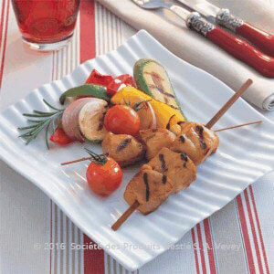
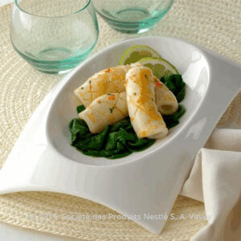
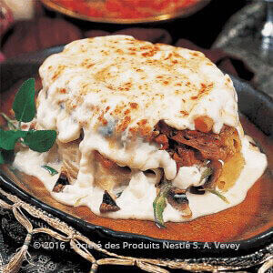
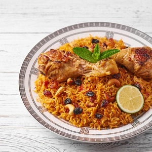
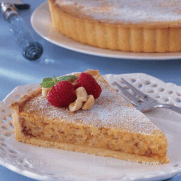

قائمة البقالة
مكوّنات صلصة التتبيل:
700 غ من فيليه صدر الدجاج٬ المقطّع إلى مكعبات متوسطة الحجم
1 ملعقة طعام من زيت الزيتون
1 ملعقة صغيرة من بذور الكراويا
2 فصوص من الثوم٬ مسحوقان
3 ملاعق طعام من خل البلسميك
2 ملاعق طعام من الخل الأبيض
2 مكعبات من مرقة الدجاج ماجي ملح أقل٬ مذوّبان في ¼ كوب أو 60 مل من الماء الساخن
1 ملعقة طعام من العسل
1 عود من الكرفس٬ صغير الحجم، مقطّع إلى شرائح
1 حبة صغيرة الحجم من البصل٬ مقطّعة إلى شرائح
رشة من الفلفل الأبيض المطحون
مكوّنات الخضار المشوية:
2 حبات متوسطة الحجم أو 200 غ من الكوسا الصغير٬ مقطّعة بالطول إلى شرائح سميكة
1 حبة متوسطة الحجم أو 125 غ من البصل٬ مقطّعة إلى قطع عريضة
1 حبة متوسطة الحجم أو 150 غ من الفليفلة الحلوة الحمراء٬ منزوعة البذور ومقطّعة إلى شرائح كبيرة
1 حبة متوسطة الحجم أو 150 غ من الفليفلة الحلوة الخضراء٬ منزوعة البذور ومقطّعة إلى شرائح كبيرة
1 حبة متوسطة الحجم أو 150 غ من الفليفلة الحلوة الصفراء٬ منزوعة البذور ومقطّعة إلى شرائح كبيرة
1 كوب أو 200 غ من الطماطم الصغيرة٬ الكاملة
طريقة التحضير
الدجاج المُتبَّل بالعسل وخل البلسميك وصفات
تُمزَج كل مكوّنات تتبيلة الدجاج وتُخلط جيدًا في وعاء. يُغطّى المزيج ويُترَك في صلصة التتبيل ويوضع في الثلاجة لمدة 12 ساعة على الأقل.
يُنسَّق الدجاج في أسياخ خشبية.
تُُشوى أسياخ الدجاج على حرارة متوسطة لمدة 5 إلى 7 دقائق من كل الجوانب أو حتى تنضج.
تُُشوى الخضار في مقلاة كبيرة غير لاصقة مدهونة بقليل من زيت الزيتون حتى ينضج.
تُنسَّق الأسياخ والخضار في طبق ثم تُقدَّم.

قائمة البقالة
1200 غ من الحبار٬ المنظّف
1 ملعقة طعام من زيت الفلفل الحار
4 فصوص من الثوم٬ المقطّع إلى شرائح رفيعة
4 عروق من الطرّخون الطازج٬ مفرومة فرماً خشناً
2 مكعبات من مرقة الدجاج ماجي ملح أقل٬ مفرومان فرماً ناعماً ومذوّبان في ملعقتين كبيرتين من الماء الساخن
600 غ من أوراق السبانخ الطازجة
50 غ من عصير اللايم الطازج٬ أو عصير حبّتين
رشة من الفلفل الأسود المطحون٬ حسب المذاق
1 ملعقة طعام من الزبدة
8 قطع من اللايم٬ للتقديم
طريقة التحضير
الحبّار المشوي مع السبانخ المذبَّلة والزبدة وصفات
تُقسّم قطع الحبّار إلى نصفين، ومن ثمّ يتمّ تحديدها بواسطة سكّين حادّ بخطوط متشابكة تفصل في ما بينها مسافة ½ سم تقريباً؛ تُتبّل بزيت الفلفل الحارّ، والثوم، والطّرخون، ومرقة الدجاج ماجي ملح أقل وتُترك لتنتقع لمدّة ساعتين.
توضع أوراق السبانخ في الماء الساخن لفترة وجيزة ثمّ في الماء البارد، ومن ثمّ تُصفّى وتُغطّى في مكان دافئ للتخلّص من الماء.
توضع مقلاة على حرارة عالية إلى أن تصبح حامية للغاية، ومن ثمّ يُطهى الحبّار على دفعات صغيرة. يُضاف ½ كوب من الماء بين كلّ دفعة وأخرى لتذويب آثار الشوي المتروكة على سطح المقلاة، ومن ثمّ توضع الصلصة في قدر صغيرة، وبالتالي يكون قد تمّ تنظيف المقلاة والاحتفاظ بصلصة لسكبها على وجه الطبق لاحقاً في آنٍ معاً.
يُعاد تسخين الصلصة؛ ويُضاف إلى تتبيلتها عصير اللايم والفلفل المطحون. تُطفأ النار وتُضاف الزبدة مع التحريك. تُصفّ أوراق السبانخ في طبقٍ للتقديم ومن ثمّ توضع قطع الحبار فوقها وتُسكب أخيراً الصلصة عليها. يُزيَّن الطبق بقطع اللايم ويُقدَّم ساخناً.

قائمة البقالة
لتحضير المعكرونة:
½ كغ من معكرونة الريغاتوني
8 أكواب أو 2 لتر من الماء
لتحضير الحشوة:
3 ملاعق طعام من الزيت النباتي
½ كغ من صدور الدجاج منزوعة الجلد والعظم
1 كوب أو 100 غ من الفطر
100 غ من بيبروني البقر
½ كوب أو 50 غ من البصل الأخضر٬ المفروم
1 علبة أو 250 غ من الذرة المعلّبة والمصفّاة
رشة من الملح٬ بحسب الرغبة
رشة من الفلفل الأسود المطحون٬ بحسب الرغبة
لتحضير صلصة البشاميل:
4 أكواب أو 1 لتر من الحليب
1 مغلف من ماجي فكرة اليوم خلطة البشاميل
1 كوب أو 100 غ من جبنة الموتزاريلا٬ المبشورة
طريقة التحضير
ريغاتوني بالدجاج المشوي والبيبروني وصفات
يغلى الماء المالح في قدر كبيرة وتسلق المعكرونة لمدّة 10 دقائق إلى أن تصبح طريّة، ثمّ ترفع عن النار وتغسل بماء بارد وتترك جانباً.
تحمّى ملعقة طعام من الزيت وتقلّى صدور الدجاج ثمّ تقطّع إلى شرائح رقيقة بالطول وتترك جانباً.
يحمّى الزيت المتبقّي في مقلاة، يقلّى الفطر ويترك جانباً.
تمزج أسرار خلطة البشاميل ماجي مع الحليب في قدر ويغلى المزيج ويترك على النار لمدّة دقيقتين إلى أن تتكاثف الصلصة.
تمزج معكرونة الريغاتوني في وعاء مع الدجاج والفطر وشرائح البيبروني والبصل الأخضر والذرة الحلوة والملح والفلفل الأسود.
يسكب مزيج المعكرونة في صينيّة، تسكب فوقه صلصة البشاميل وتغطّى بالجبنة.
تطهى في الفرن على حرارة تبلغ 185 درجة مئويّة لمدّة تتراوح بين 20 و25 دقيقة.
قائمة البقالة
1 وحدة كبيرة أو 1200 غ من الدجاج الكامل
2 ملاعق طعام من زيت الزيتون
1 حبة متوسطة الحجم أو 125 غ من البصل٬ مقطعة إلى شرائح
2 فصوص من الثوم٬ مسحوقان
1 حبة صغيرة الحجم أو 100 غ من الفليفلة الحلوة الخضراء٬ منزوعة البذور ومقطعة إلى شرائح رقيقة
1 حبة صغيرة الحجم أو 100 غ من الفليفلة الحلوة الحمراء٬ منزوعة البذور ومقطعة إلى شرائح رقيقة
1 حبة صغيرة الحجم أو 100 غ من الفليفلة الحلوة الصفراء٬ منزوعة البذور ومقطعة إلى شرائح رقيقة
1 ملعقة طعام من الدقيق العادي
رشة من الفلفل الأسود المطحون
رشة من مسحوق الفلفل الحلو
رشة من مسحوق الفلفل الحار
رشة من الكمون المطحون
رشة من الكزبرة المطحونة
1 حبة متوسطة الحجم أو 150 غ من الطماطم٬ مقشرة ومقطعة إلى شرائح رقيقة
3 ملاعق طعام من معجون الطماطم
2 مكعبات من ®MAGGI مرقة اللحم
2½ أكواب أو 625 مل من الماء
طريقة التحضير
دجاج محمّر مع الصلصة المكسيكية وصفات
يُحمّر الدجاج في فرن محمّى على حرارة 200 درجة مئوية لمدة تتراوح بين 45-50 دقيقة أو حتى ينضج الدجاج ويكتسب لوناً بنياً ذهبياً.
أثناء ذلك، يُسخّن زيت الزيتون في قدر متوسطة الحجم. يُضاف البصل ويُقلّى لمدة تتراوح بين 2-3 دقائق أو حتى يذبل. ثم يُضاف الثوم، والفليفلة وتُحرك المكونات لمدة دقيقتين ثم يضاف الدقيق ويُحرّك لبضعة ثوانٍ.
يُضاف الفلفل الأسود، الفلفل الحلو، الفلفل الحار، الكمون، الكزبرة، الطماطم، معجون الطماطم ومكعبا مرقة الدجاج ماجي ثم تُحرّك المكوّنات لمدة 3 دقائق و يُضاف الماء. يُغلى المزيج ويُترك على نار خفيفة مع التحريك من وقت إلى آخر لمدة 10 دقائق.
يُقطّع الدجاج المحمّر إلى قطع ويوضع في طبق للتقديم وتُسكب الصلصة فوقه ثمّ يُقدّم.

قائمة البقالة
المقادير
- الزعفران : ملعقة صغيرة
- مرق دجاج : 1 مكعب
- الدجاج : كيلو ونصف (مقطع)
- أرز بسمتي : كوبان وربع
- الزبدة : ربع كوب
- البصل : 1 حبة (مقطع)
- الثوم : 6 فصوص (مهروس)
- طماطم : ربع كوب (مهروسة)
- طماطم : 6 حبات (مقطعة)
- الجزر : 3 حبات (مبشور)
- حبهان : رشّة
- القرنفل : 3 حبات
- بهار كبسة : ملعقة كبيرة
- الكمون : رشّة
- كزبرة يابسة : رشّة
- ملح : حسب الرغبة
- فلفل أسود : حسب الرغبة
- ماء ساخن : 4 اكواب
طريقة التحضير
الكبسة
في قدر على نار هادئة ذوبي الزبدة ثم أضيفي البصل والثوم ثم قلبي حتى تذبل المكونات.
أضيفي قطع الدجاج مع التقليب المستمر ليتغير لون القطع.
أضيفي الطماطم المهروسة، الطماطم المقطعة والجزر ثم نكهي بالحبهان، القرنفل، الكمون، الكزبرة، الملح والفلفل الأسود.
زيدي المرق وبهارات الكبسة ثم قلبي المكونات على نار منخفضة حتى تنضج وتتجانس.
اسكبي الماء ثم أضيفي الأرز وحركي المكونات حتى تتداخل.
غطي القدر ثم اتركي الأرز على نار منخفضة 35 دقيقة حتى ينضج.
ذوبي الزعفران بالقليل من الماء ثم أضيفيه فوق المكونات وقلبي من الأعلى إلى الأسفل حتى تتجانس.
وزعي الكبسة في طبق وقدميها ساخنة.
 قائمة البقالة
قائمة البقالة
- للتتبيلة :
البصل : 1 حبة (صغير الحجم / مفروم فرمًا ناعمًا)
الثوم : فصّان (مفروم فرمًا ناعمًا)
زيت الزيتون : 4 ملاعق كبيرة
الخل : 2 ملعقة كبيرة
الزعتر : 2 ملعقة كبيرة (مخلوط مع الكمُّون)
ملح : ملعقة صغيرة
- لصلصة البندورة :
بندورة : 3 حبات متوسطة (مفرومةً فرمًا ناعمًا)
صلصة طماطم : 2 ملعقة كبيرة
زيت الزيتون : نصف فنجان صغير
- لصلصة الثوم :
الروب : 5 ملاعق كبيرة
ملح : نصف ملعقة كبيرة
الثوم : فص (مهروس)
زيت الزيتون : 2 ملعقة كبيرة
- لحم العجل : نصف كيلو
- ملح : حسب الرغبة
- فلفل أسود : حسب الرغبة
- الفلفل الأحمر : حسب الرغبة
- الزيت النباتي : نصف كوب (للقلي)
- الخبز الإفرنجي : 3 شرائح (سميك / للتقديم)
طريقة التحضير
الكباب على الطريقة التركية
يُقطَّع اللحم إلى شرائح طولية، ثمَّ، يُغسل، ويُضاف إلى وعاء كبير.
للتتبيلة: تُخلط مكوِّنات التتبيلة معًا، ثم تُضاف إلى وعاء اللحم، مع التقليب، فيُحفظ الوعاء في الثلَّاجة.
لصلصة البندورة: تُضاف البندورة، والصلصة، إلى مقلاة محتوية على زيت الزيتون الفاتر، مع الطهي، على نار هادئة، وذلك لخمس دقائق.
يُصبُّ القليل من الزيت النباتي إلى مقلاة عميقة، فتُضاف شرائح اللحم، مع التقليب المستمرّ على نار هادئة. يُنثر الملح والفلفل الأسود والفلفل الأحمر، مع التقليب.
لصلصة الثوم: يُخلط اللبن، مع الملح والثوم والزيت، بشريط الخلَّاط، حتَّى يتشكَّل خليط متجانس.
طريقة التقديم: توزَّع شرائح الخبز في طبق التقديم، فيوزَّع اللحم عليها، ويُسكب خليط اللبن وصلصة البندورة. يُزيَّن الطبق بشرائح الـ"تشيبس"

قائمة البقالة
1¼ كوب أو 175 غ من الدقيق العادي
½ كوب أو 100 غ من الزبدة غير المملحة٬ المقطعة
2 ملاعق طعام من السكر البودرة
1 من صفار البيض
½ كوب أو 125 غ من مربّى المشمش
¾ كوب أو 150 غ من جبنة الكريما
½ كوب أو 100 غ من السكر الناعم
1 كوب أو 160 غ من البندق٬ المحمّص والمقطّع
1 علبة أو 170 غ من قشطة نستله
2 من البيض
1 ملعقة طعام من خلاصة الفانيلا
طريقة التحضير
فطيرة الجبنة والبندق وصفات
يُمزج الدقيق، الزبدة، السكر البودرة وصفار البيض في الخلاط، يُخلط المزيج حتى يصبح متماسكاً ويشكّل عجينةً طرية (توضع العجينة في البرّاد لمدة ½ ساعة في حال كانت طريةّ جداً).
تُمدّ العجينة على ناحية مغطاة بالدقيق حتى يصبح حجمها ملائماً لقاعدة وجوانب صينية التارة قياس 26 سم، من ثمّ توضع في البرّاد لمدّة 15 دقيقة.
تُخبز العجينة في فرنٍ محمّى على حرارة 200 درجة مئويّة لمدّة 10 دقائق.
تُمرغ العجينة بالمربّى.
تُمزج جبنة الكريما والسكر ويخلطان جيّداً أو إلى أن يصبح الخليط طرياً. ومن ثمّ تُضاف المكوّنات المتبقية وتخلط مع بعضها البعض جيداً.
يُسكب الخليط بالتساوي على العجينة المخبوزة المجهّزة مسبقاً.
توضع في فرنٍ محمّى على حرارة 200 درجة مئويّة لمدّة 25-30 دقيقة أو إلى أن يصبح مزيج جبنة الكريما متماسكاً من الوسط.
تُترك الفطيرة لتبرد ومن ثمّ توضع في البرّاد لمدّة 3 ساعات قبل التقديم.
 |
 |
 |
 |
 |
 |